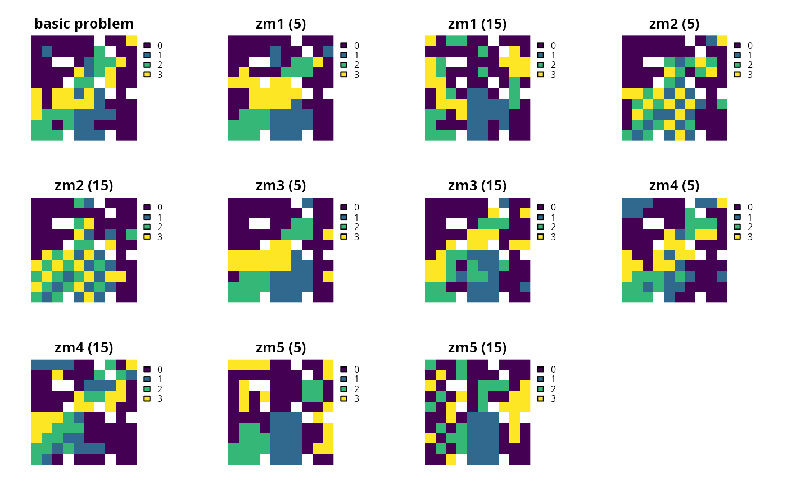

Add penalties to a conservation planning problem to favor
solutions that select planning units with high connectivity between them.
# S4 method for ConservationProblem,ANY,ANY,Matrix add_connectivity_penalties(x, penalty, zones, data) # S4 method for ConservationProblem,ANY,ANY,matrix add_connectivity_penalties(x, penalty, zones, data) # S4 method for ConservationProblem,ANY,ANY,data.frame add_connectivity_penalties(x, penalty, zones, data) # S4 method for ConservationProblem,ANY,ANY,array add_connectivity_penalties(x, penalty, zones, data)
Arguments
| x |
|
|---|---|
| penalty |
|
| zones |
|
| data |
|
| ... | not used. |
Value
ConservationProblem-class object with the penalties
added to it.
Details
This function uses connectivity data to penalize solutions that have low connectivity. It can accommodate symmetric and asymmetric relationships between planning units. Although Marxan penalizes connections between planning units with high connectivity values, it is important to note that this function favors connections between planning units with high connectivity values. This function was inspired by Beger et al. (2010).
The argument to data can be specified in several different ways:
matrix,Matrixwhere rows and columns represent different planning units and the value of each cell represents the strength of connectivity between two different planning units. Cells that occur along the matrix diagonal are treated as weights which indicate that planning units are more desirable in the solution. The argument to
zonescan be used to control the strength of connectivity between planning units in different zones. The default argument forzonesis to treat planning units allocated to different zones as having zero connectivity.data.framecontaining the fields (columns)
"id1","id2", and"boundary". Here, each row denotes the connectivity between two planning units following the Marxan format. The data can be used to denote symmetric or asymmetric relationships between planning units. By default, input data is assumed to be symmetric unless asymmetric data is also included (e.g. if data is present for planning units 2 and 3, then the same amount of connectivity is expected for planning units 3 and 2, unless connectivity data is also provided for planning units 3 and 2). If the argument toxcontains multiple zones, then the columns"zone1"and"zone2"can optionally be provided to manually specify the connectivity values between planning units when they are allocated to specific zones. If the columns"zone1"and"zone2"are present, then the argument tozonesmust beNULL.arraycontaining four-dimensions where cell values indicate the strength of connectivity between planning units when they are assigned to specific management zones. The first two dimensions (i.e. rows and columns) indicate the strength of connectivity between different planning units and the second two dimensions indicate the different management zones. Thus the
data[1, 2, 3, 4]indicates the strength of connectivity between planning unit 1 and planning unit 2 when planning unit 1 is assigned to zone 3 and planning unit 2 is assigned to zone 4.
The connectivity penalties are calculated using the following equations.
Let \(I\) represent the set of planning units, \(Z\) represent the set
of management zones, and $$X_iz$$ represent the decision
variable for planning unit \(i\) for in zone \(z\) (e.g. with binary
values one indicating if planning unit is allocated or not). Also, let
\(p\) represent the argument to penalty, \(D\) represent the
argument to data, and \(W\) represent the argument to zones.
If the argument to data is supplied
as a matrix or Matrix, then the penalties are calculated as:
$$ \sum_{i}^{I} \sum_{j}^{I} \sum_{z}^{Z} \sum_{y}^{Z} (-p \times X_{iz} \times X_{jy} \times D_{ij} \times W_{zy})$$
Otherwise, if the argument to data is supplied as a
data.frame or array, then the penalties are calculated as:
$$ \sum_{i}^{I} \sum_{j}^{I} \sum_{z}^{Z} \sum_{y}^{Z} (-p \times X_{iz} \times X_{jy} \times D_{ijzy})$$
Note that when the problem objective is to maximize some measure of benefit and not minimize some measure of cost, the term \(-p\) is replaced with \(p\).
References
Beger M, Linke S, Watts M, Game E, Treml E, Ball I, and Possingham, HP (2010) Incorporating asymmetric connectivity into spatial decision making for conservation, Conservation Letters, 3: 359--368.
See also
Examples
# load Matrix package for visualizing matrices require(Matrix)#># load data data(sim_pu_polygons, sim_pu_zones_stack, sim_features, sim_features_zones) # define function to rescale values between zero and one so that we # can compare solutions from different connectivity matrices rescale <- function(x, to = c(0, 1), from = range(x, na.rm = TRUE)) { (x - from[1]) / diff(from) * diff(to) + to[1] } # create basic problem p1 <- problem(sim_pu_polygons, sim_features, "cost") %>% add_min_set_objective() %>% add_relative_targets(0.2) # create a symmetric connectivity matrix where the connectivity between # two planning units corresponds to their shared boundary length b_matrix <- boundary_matrix(sim_pu_polygons) # standardize matrix values to lay between zero and one b_matrix[] <- rescale(b_matrix[]) # visualize connectivity matrix image(b_matrix)# create a symmetric connectivity matrix where the connectivity between # two planning units corresponds to their spatial proximity # i.e. planning units that are further apart share less connectivity centroids <- rgeos::gCentroid(sim_pu_polygons, byid = TRUE) d_matrix <- (1 / (as(dist(centroids@coords), "Matrix") + 1)) # standardize matrix values to lay between zero and one d_matrix[] <- rescale(d_matrix[]) # remove connections between planning units without connectivity to # reduce run-time d_matrix[d_matrix < 0.7] <- 0 # visualize connectivity matrix image(d_matrix)# create a symmetric connectivity matrix where the connectivity # between adjacent two planning units corresponds to their combined # value in a field in the planning unit attribute data # for example, this field could describe the extent of native vegetation in # each planning unit and we could use connectivity penalties to identify # solutions that cluster planning units together that both contain large # amounts of native vegetation c_matrix <- connectivity_matrix(sim_pu_polygons, "cost") # standardize matrix values to lay between zero and one c_matrix[] <- rescale(c_matrix[]) # visualize connectivity matrix image(c_matrix)# create an asymmetric connectivity matrix. Here, connectivity occurs between # adjacent planning units and, due to rivers flowing southwards # through the study area, connectivity from northern planning units to # southern planning units is ten times stronger than the reverse. ac_matrix <- matrix(0, length(sim_pu_polygons), length(sim_pu_polygons)) ac_matrix <- as(ac_matrix, "Matrix") adjacent_units <- rgeos::gIntersects(sim_pu_polygons, byid = TRUE) for (i in seq_len(length(sim_pu_polygons))) { for (j in seq_len(length(sim_pu_polygons))) { # find if planning units are adjacent if (adjacent_units[i, j]) { # find if planning units lay north and south of each other # i.e. they have the same x-coordinate if (centroids@coords[i, 1] == centroids@coords[j, 1]) { if (centroids@coords[i, 2] > centroids@coords[j, 2]) { # if i is north of j add 10 units of connectivity ac_matrix[i, j] <- ac_matrix[i, j] + 10 } else if (centroids@coords[i, 2] < centroids@coords[j, 2]) { # if i is south of j add 1 unit of connectivity ac_matrix[i, j] <- ac_matrix[i, j] + 1 } } } } } # standardize matrix values to lay between zero and one ac_matrix[] <- rescale(ac_matrix[]) # visualize asymmetric connectivity matrix image(ac_matrix)# create penalties penalties <- c(10, 25) # create problems using the different connectivity matrices and penalties p2 <- list(p1, p1 %>% add_connectivity_penalties(penalties[1], data = b_matrix), p1 %>% add_connectivity_penalties(penalties[2], data = b_matrix), p1 %>% add_connectivity_penalties(penalties[1], data = d_matrix), p1 %>% add_connectivity_penalties(penalties[2], data = d_matrix), p1 %>% add_connectivity_penalties(penalties[1], data = c_matrix), p1 %>% add_connectivity_penalties(penalties[2], data = c_matrix), p1 %>% add_connectivity_penalties(penalties[1], data = ac_matrix), p1 %>% add_connectivity_penalties(penalties[2], data = ac_matrix)) # assign names to the problems names(p2) <- c("basic problem", paste0("b_matrix (", penalties,")"), paste0("d_matrix (", penalties,")"), paste0("c_matrix (", penalties,")"), paste0("ac_matrix (", penalties,")"))# solve problems s2 <- lapply(p2, solve)#> Optimize a model with 5 rows, 90 columns and 450 nonzeros #> Variable types: 0 continuous, 90 integer (90 binary) #> Coefficient statistics: #> Matrix range [2e-01, 9e-01] #> Objective range [2e+02, 2e+02] #> Bounds range [1e+00, 1e+00] #> RHS range [6e+00, 1e+01] #> Found heuristic solution: objective 3934.6218396 #> Presolve time: 0.00s #> Presolved: 5 rows, 90 columns, 450 nonzeros #> Variable types: 0 continuous, 90 integer (90 binary) #> Presolved: 5 rows, 90 columns, 450 nonzeros #> #> #> Root relaxation: objective 3.496032e+03, 16 iterations, 0.00 seconds #> #> Nodes | Current Node | Objective Bounds | Work #> Expl Unexpl | Obj Depth IntInf | Incumbent BestBd Gap | It/Node Time #> #> 0 0 3496.03193 0 4 3934.62184 3496.03193 11.1% - 0s #> H 0 0 3585.9601335 3496.03193 2.51% - 0s #> #> Explored 1 nodes (16 simplex iterations) in 0.00 seconds #> Thread count was 1 (of 4 available processors) #> #> Solution count 2: 3585.96 3934.62 #> #> Optimal solution found (tolerance 1.00e-01) #> Best objective 3.585960133519e+03, best bound 3.496031931890e+03, gap 2.5078% #> Optimize a model with 581 rows, 378 columns and 1602 nonzeros #> Variable types: 0 continuous, 378 integer (378 binary) #> Coefficient statistics: #> Matrix range [2e-01, 1e+00] #> Objective range [3e+00, 2e+02] #> Bounds range [1e+00, 1e+00] #> RHS range [6e+00, 1e+01] #> Found heuristic solution: objective 17287.196992 #> Found heuristic solution: objective 3691.2885062 #> Presolve time: 0.01s #> Presolved: 581 rows, 378 columns, 1602 nonzeros #> Variable types: 0 continuous, 378 integer (378 binary) #> Presolved: 581 rows, 378 columns, 1602 nonzeros #> #> #> Root relaxation: objective 3.307193e+03, 159 iterations, 0.01 seconds #> #> Nodes | Current Node | Objective Bounds | Work #> Expl Unexpl | Obj Depth IntInf | Incumbent BestBd Gap | It/Node Time #> #> 0 0 3307.19310 0 86 3691.28851 3307.19310 10.4% - 0s #> H 0 0 3433.8940898 3307.19310 3.69% - 0s #> #> Explored 1 nodes (159 simplex iterations) in 0.03 seconds #> Thread count was 1 (of 4 available processors) #> #> Solution count 3: 3433.89 3691.29 17287.2 #> #> Optimal solution found (tolerance 1.00e-01) #> Best objective 3.433894089811e+03, best bound 3.307193102718e+03, gap 3.6897% #> Optimize a model with 581 rows, 378 columns and 1602 nonzeros #> Variable types: 0 continuous, 378 integer (378 binary) #> Coefficient statistics: #> Matrix range [2e-01, 1e+00] #> Objective range [8e+00, 2e+02] #> Bounds range [1e+00, 1e+00] #> RHS range [6e+00, 1e+01] #> Found heuristic solution: objective 15487.196992 #> Found heuristic solution: objective 3326.2885062 #> Presolve time: 0.01s #> Presolved: 581 rows, 378 columns, 1602 nonzeros #> Variable types: 0 continuous, 378 integer (378 binary) #> Presolved: 581 rows, 378 columns, 1602 nonzeros #> #> #> Root relaxation: objective 3.012030e+03, 174 iterations, 0.01 seconds #> #> Nodes | Current Node | Objective Bounds | Work #> Expl Unexpl | Obj Depth IntInf | Incumbent BestBd Gap | It/Node Time #> #> 0 0 3012.03046 0 138 3326.28851 3012.03046 9.45% - 0s #> #> Explored 1 nodes (174 simplex iterations) in 0.03 seconds #> Thread count was 1 (of 4 available processors) #> #> Solution count 2: 3326.29 15487.2 #> #> Optimal solution found (tolerance 1.00e-01) #> Best objective 3.326288506226e+03, best bound 3.012030457072e+03, gap 9.4477% #> Optimize a model with 1601 rows, 888 columns and 3642 nonzeros #> Variable types: 0 continuous, 888 integer (888 binary) #> Coefficient statistics: #> Matrix range [2e-01, 1e+00] #> Objective range [7e+00, 2e+02] #> Bounds range [1e+00, 1e+00] #> RHS range [6e+00, 1e+01] #> Found heuristic solution: objective 11397.038660 #> Found heuristic solution: objective 2915.9453686 #> Presolve time: 0.04s #> Presolved: 1601 rows, 888 columns, 3642 nonzeros #> Variable types: 0 continuous, 888 integer (888 binary) #> Presolved: 1601 rows, 888 columns, 3642 nonzeros #> #> #> Root relaxation: objective 2.277325e+03, 589 iterations, 0.09 seconds #> #> Nodes | Current Node | Objective Bounds | Work #> Expl Unexpl | Obj Depth IntInf | Incumbent BestBd Gap | It/Node Time #> #> 0 0 2277.32517 0 877 2915.94537 2277.32517 21.9% - 0s #> 0 0 2282.99210 0 874 2915.94537 2282.99210 21.7% - 5s #> 0 0 2287.74759 0 872 2915.94537 2287.74759 21.5% - 5s #> 0 0 2287.74759 0 483 2915.94537 2287.74759 21.5% - 5s #> 0 0 2292.10641 0 479 2915.94537 2292.10641 21.4% - 6s #> 0 0 2299.06011 0 473 2915.94537 2299.06011 21.2% - 6s #> 0 0 2309.44472 0 475 2915.94537 2309.44472 20.8% - 6s #> 0 0 2317.00747 0 475 2915.94537 2317.00747 20.5% - 6s #> H 0 0 2828.2686220 2317.00747 18.1% - 7s #> 0 2 2317.09142 0 475 2828.26862 2317.09142 18.1% - 7s #> H 44 44 2697.3754103 2367.87205 12.2% 59.4 7s #> H 45 45 2664.1671751 2367.87205 11.1% 59.0 7s #> H 182 133 2651.6141595 2381.26507 10.2% 42.0 7s #> #> Cutting planes: #> Gomory: 5 #> #> Explored 241 nodes (12169 simplex iterations) in 8.21 seconds #> Thread count was 1 (of 4 available processors) #> #> Solution count 6: 2651.61 2664.17 2697.38 ... 11397 #> #> Optimal solution found (tolerance 1.00e-01) #> Best objective 2.651614159475e+03, best bound 2.387647374382e+03, gap 9.9549% #> Optimize a model with 1601 rows, 888 columns and 3642 nonzeros #> Variable types: 0 continuous, 888 integer (888 binary) #> Coefficient statistics: #> Matrix range [2e-01, 1e+00] #> Objective range [2e+01, 2e+02] #> Bounds range [1e+00, 1e+00] #> RHS range [6e+00, 1e+01] #> Found heuristic solution: objective 761.8011610 #> Presolve time: 0.02s #> Presolved: 1601 rows, 888 columns, 3642 nonzeros #> Variable types: 0 continuous, 888 integer (888 binary) #> Presolved: 1601 rows, 888 columns, 3642 nonzeros #> #> #> Root relaxation: objective 1.267850e+02, 243 iterations, 0.03 seconds #> #> Nodes | Current Node | Objective Bounds | Work #> Expl Unexpl | Obj Depth IntInf | Incumbent BestBd Gap | It/Node Time #> #> 0 0 126.78496 0 695 761.80116 126.78496 83.4% - 0s #> H 0 0 468.0158310 126.78496 72.9% - 0s #> 0 0 139.58775 0 693 468.01583 139.58775 70.2% - 5s #> 0 0 149.69686 0 691 468.01583 149.69686 68.0% - 5s #> 0 0 149.69686 0 382 468.01583 149.69686 68.0% - 5s #> 0 0 158.61851 0 380 468.01583 158.61851 66.1% - 6s #> 0 0 168.29660 0 347 468.01583 168.29660 64.0% - 6s #> 0 0 184.52811 0 378 468.01583 184.52811 60.6% - 6s #> 0 0 195.56906 0 383 468.01583 195.56906 58.2% - 6s #> 0 2 195.59996 0 383 468.01583 195.59996 58.2% - 6s #> H 2 2 421.3259805 195.85452 53.5% 30.5 6s #> #> Cutting planes: #> Gomory: 5 #> #> Explored 47 nodes (2701 simplex iterations) in 6.77 seconds #> Thread count was 1 (of 4 available processors) #> #> Solution count 3: 421.326 468.016 761.801 #> #> Optimal solution found (tolerance 1.00e-01) #> Best objective 4.213259804528e+02, best bound 3.890941790363e+02, gap 7.6501% #> Optimize a model with 581 rows, 378 columns and 1602 nonzeros #> Variable types: 0 continuous, 378 integer (378 binary) #> Coefficient statistics: #> Matrix range [2e-01, 1e+00] #> Objective range [9e+00, 2e+02] #> Bounds range [1e+00, 1e+00] #> RHS range [6e+00, 1e+01] #> Found heuristic solution: objective 15721.108025 #> Found heuristic solution: objective 3513.2283384 #> Presolve time: 0.01s #> Presolved: 581 rows, 378 columns, 1602 nonzeros #> Variable types: 0 continuous, 378 integer (378 binary) #> Presolved: 581 rows, 378 columns, 1602 nonzeros #> #> #> Root relaxation: objective 3.099126e+03, 223 iterations, 0.01 seconds #> #> Nodes | Current Node | Objective Bounds | Work #> Expl Unexpl | Obj Depth IntInf | Incumbent BestBd Gap | It/Node Time #> #> 0 0 3099.12568 0 190 3513.22834 3099.12568 11.8% - 0s #> 0 0 3106.44940 0 164 3513.22834 3106.44940 11.6% - 0s #> H 0 0 3512.4511671 3106.44940 11.6% - 0s #> H 0 0 3312.8745258 3106.44940 6.23% - 0s #> #> Cutting planes: #> Gomory: 1 #> #> Explored 1 nodes (264 simplex iterations) in 0.12 seconds #> Thread count was 1 (of 4 available processors) #> #> Solution count 4: 3312.87 3512.45 3513.23 15721.1 #> #> Optimal solution found (tolerance 1.00e-01) #> Best objective 3.312874525779e+03, best bound 3.106449395648e+03, gap 6.2310% #> Optimize a model with 581 rows, 378 columns and 1602 nonzeros #> Variable types: 0 continuous, 378 integer (378 binary) #> Coefficient statistics: #> Matrix range [2e-01, 1e+00] #> Objective range [2e+01, 2e+02] #> Bounds range [1e+00, 1e+00] #> RHS range [6e+00, 1e+01] #> Found heuristic solution: objective 11571.974576 #> Found heuristic solution: objective 2881.1380866 #> Presolve time: 0.01s #> Presolved: 581 rows, 378 columns, 1602 nonzeros #> Variable types: 0 continuous, 378 integer (378 binary) #> Presolved: 581 rows, 378 columns, 1602 nonzeros #> #> #> Root relaxation: objective 2.309063e+03, 214 iterations, 0.02 seconds #> #> Nodes | Current Node | Objective Bounds | Work #> Expl Unexpl | Obj Depth IntInf | Incumbent BestBd Gap | It/Node Time #> #> 0 0 2309.06312 0 362 2881.13809 2309.06312 19.9% - 0s #> 0 0 2328.00732 0 359 2881.13809 2328.00732 19.2% - 0s #> 0 0 2340.74971 0 365 2881.13809 2340.74971 18.8% - 0s #> 0 0 2340.74971 0 224 2881.13809 2340.74971 18.8% - 0s #> 0 0 2346.29691 0 224 2881.13809 2346.29691 18.6% - 0s #> 0 0 2353.98367 0 223 2881.13809 2353.98367 18.3% - 0s #> 0 0 2358.85647 0 227 2881.13809 2358.85647 18.1% - 0s #> 0 0 2375.48689 0 190 2881.13809 2375.48689 17.6% - 0s #> 0 0 2376.01174 0 210 2881.13809 2376.01174 17.5% - 0s #> H 0 0 2633.0995862 2376.01174 9.76% - 0s #> #> Cutting planes: #> Gomory: 5 #> #> Explored 1 nodes (652 simplex iterations) in 0.62 seconds #> Thread count was 1 (of 4 available processors) #> #> Solution count 3: 2633.1 2881.14 11572 #> #> Optimal solution found (tolerance 1.00e-01) #> Best objective 2.633099586223e+03, best bound 2.376011737647e+03, gap 9.7637% #> Optimize a model with 293 rows, 234 columns and 1026 nonzeros #> Variable types: 0 continuous, 234 integer (234 binary) #> Coefficient statistics: #> Matrix range [2e-01, 1e+00] #> Objective range [1e+00, 2e+02] #> Bounds range [1e+00, 1e+00] #> RHS range [6e+00, 1e+01] #> Found heuristic solution: objective 17098.178722 #> Found heuristic solution: objective 3824.6218396 #> Presolve time: 0.00s #> Presolved: 293 rows, 234 columns, 1026 nonzeros #> Variable types: 0 continuous, 234 integer (234 binary) #> Presolved: 293 rows, 234 columns, 1026 nonzeros #> #> #> Root relaxation: objective 3.385781e+03, 49 iterations, 0.00 seconds #> #> Nodes | Current Node | Objective Bounds | Work #> Expl Unexpl | Obj Depth IntInf | Incumbent BestBd Gap | It/Node Time #> #> 0 0 3385.78126 0 24 3824.62184 3385.78126 11.5% - 0s #> H 0 0 3509.4733615 3385.78126 3.52% - 0s #> #> Explored 1 nodes (49 simplex iterations) in 0.03 seconds #> Thread count was 1 (of 4 available processors) #> #> Solution count 3: 3509.47 3824.62 17098.2 #> #> Optimal solution found (tolerance 1.00e-01) #> Best objective 3.509473361498e+03, best bound 3.385781260518e+03, gap 3.5245% #> Optimize a model with 293 rows, 234 columns and 1026 nonzeros #> Variable types: 0 continuous, 234 integer (234 binary) #> Coefficient statistics: #> Matrix range [2e-01, 1e+00] #> Objective range [2e+00, 2e+02] #> Bounds range [1e+00, 1e+00] #> RHS range [6e+00, 1e+01] #> Found heuristic solution: objective 15910.178722 #> Found heuristic solution: objective 3659.6218396 #> Presolve time: 0.00s #> Presolved: 293 rows, 234 columns, 1026 nonzeros #> Variable types: 0 continuous, 234 integer (234 binary) #> Presolved: 293 rows, 234 columns, 1026 nonzeros #> #> #> Root relaxation: objective 3.172486e+03, 93 iterations, 0.00 seconds #> #> Nodes | Current Node | Objective Bounds | Work #> Expl Unexpl | Obj Depth IntInf | Incumbent BestBd Gap | It/Node Time #> #> 0 0 3172.48586 0 64 3659.62184 3172.48586 13.3% - 0s #> H 0 0 3570.6343537 3172.48586 11.2% - 0s #> H 0 0 3378.2453465 3172.48586 6.09% - 0s #> #> Explored 1 nodes (93 simplex iterations) in 0.02 seconds #> Thread count was 1 (of 4 available processors) #> #> Solution count 4: 3378.25 3570.63 3659.62 15910.2 #> #> Optimal solution found (tolerance 1.00e-01) #> Best objective 3.378245346477e+03, best bound 3.172485864952e+03, gap 6.0907%# plot solutions par(mfrow = c(3, 3)) for (i in seq_along(s2)) { plot(s2[[i]], main = names(p2)[i], cex = 1.5, col = "white") plot(s2[[i]][s2[[i]]$solution_1 == 1, ], col = "darkgreen", add = TRUE) }# create minimal multi-zone problem and limit solver to one minute # to obtain solutions in a short period of time p3 <- problem(sim_pu_zones_stack, sim_features_zones) %>% add_min_set_objective() %>% add_relative_targets(matrix(0.15, nrow = 5, ncol = 3)) %>% add_binary_decisions() %>% add_default_solver(time_limit = 60) # create matrix showing which planning units are adjacent to other units a_matrix <- connected_matrix(sim_pu_zones_stack) # visualize matrix image(a_matrix)# create a zone matrix where connectivities are only present between # planning units that are allocated to the same zone zm1 <- as(diag(3), "Matrix") # print zone matrix print(zm1)#> [,1] [,2] [,3] #> [1,] 1 . . #> [2,] . 1 . #> [3,] . . 1# create a zone matrix where connectivities are strongest between # planning units allocated to different zones zm2 <- matrix(1, ncol = 3, nrow = 3) diag(zm2) <- 0 zm2 <- as(zm2, "Matrix") # print zone matrix print(zm2)#> 3 x 3 Matrix of class "dsyMatrix" #> [,1] [,2] [,3] #> [1,] 0 1 1 #> [2,] 1 0 1 #> [3,] 1 1 0# create a zone matrix that indicates that connectivities between planning # units assigned to the same zone are much higher than connectivities # assigned to different zones zm3 <- matrix(0.1, ncol = 3, nrow = 3) diag(zm3) <- 1 zm3 <- as(zm3, "Matrix") # print zone matrix print(zm3)#> 3 x 3 Matrix of class "dsyMatrix" #> [,1] [,2] [,3] #> [1,] 1.0 0.1 0.1 #> [2,] 0.1 1.0 0.1 #> [3,] 0.1 0.1 1.0# create a zone matrix that indicates that connectivities between planning # units allocated to zone 1 are very high, connectivities between planning # units allocated to zones 1 and 2 are moderately high, and connectivities # planning units allocated to other zones are low zm4 <- matrix(0.1, ncol = 3, nrow = 3) zm4[1, 1] <- 1 zm4[1, 2] <- 0.5 zm4[2, 1] <- 0.5 zm4 <- as(zm4, "Matrix") # print zone matrix print(zm4)#> 3 x 3 Matrix of class "dsyMatrix" #> [,1] [,2] [,3] #> [1,] 1.0 0.5 0.1 #> [2,] 0.5 0.1 0.1 #> [3,] 0.1 0.1 0.1# create a zone matrix with strong connectivities between planning units # allocated to the same zone, moderate connectivities between planning # unit allocated to zone 1 and zone 2, and negative connectivities between # planning units allocated to zone 3 and the other two zones zm5 <- matrix(-1, ncol = 3, nrow = 3) zm5[1, 2] <- 0.5 zm5[2, 1] <- 0.5 diag(zm5) <- 1 zm5 <- as(zm5, "Matrix") # print zone matrix print(zm5)#> 3 x 3 Matrix of class "dsyMatrix" #> [,1] [,2] [,3] #> [1,] 1.0 0.5 -1 #> [2,] 0.5 1.0 -1 #> [3,] -1.0 -1.0 1# create vector of penalties to use creating problems penalties2 <- c(5, 30) # create multi-zone problems using the adjacent connectivity matrix and # different zone matrices p4 <- list( p3, p3 %>% add_connectivity_penalties(penalties2[1], zm1, a_matrix), p3 %>% add_connectivity_penalties(penalties2[2], zm1, a_matrix), p3 %>% add_connectivity_penalties(penalties2[1], zm2, a_matrix), p3 %>% add_connectivity_penalties(penalties2[2], zm2, a_matrix), p3 %>% add_connectivity_penalties(penalties2[1], zm3, a_matrix), p3 %>% add_connectivity_penalties(penalties2[2], zm3, a_matrix), p3 %>% add_connectivity_penalties(penalties2[1], zm4, a_matrix), p3 %>% add_connectivity_penalties(penalties2[2], zm4, a_matrix), p3 %>% add_connectivity_penalties(penalties2[1], zm5, a_matrix), p3 %>% add_connectivity_penalties(penalties2[2], zm5, a_matrix)) # assign names to the problems names(p4) <- c("basic problem", paste0("zm", rep(seq_len(5), each = 2), " (", rep(penalties2, 2), ")"))# solve problems s4 <- lapply(p4, solve)#> Optimize a model with 105 rows, 270 columns and 1620 nonzeros #> Variable types: 0 continuous, 270 integer (270 binary) #> Coefficient statistics: #> Matrix range [2e-01, 1e+00] #> Objective range [2e+02, 2e+02] #> Bounds range [1e+00, 1e+00] #> RHS range [1e+00, 1e+01] #> Found heuristic solution: objective 10275.924144 #> Presolve time: 0.01s #> Presolved: 105 rows, 270 columns, 1620 nonzeros #> Variable types: 0 continuous, 270 integer (270 binary) #> Presolved: 105 rows, 270 columns, 1620 nonzeros #> #> #> Root relaxation: objective 8.943504e+03, 123 iterations, 0.01 seconds #> #> Nodes | Current Node | Objective Bounds | Work #> Expl Unexpl | Obj Depth IntInf | Incumbent BestBd Gap | It/Node Time #> #> 0 0 8943.50352 0 15 10275.9241 8943.50352 13.0% - 0s #> H 0 0 9113.2309417 8943.50352 1.86% - 0s #> #> Explored 1 nodes (123 simplex iterations) in 0.02 seconds #> Thread count was 1 (of 4 available processors) #> #> Solution count 2: 9113.23 10275.9 #> #> Optimal solution found (tolerance 1.00e-01) #> Best objective 9.113230941747e+03, best bound 8.943503517801e+03, gap 1.8624% #> Optimize a model with 1845 rows, 1140 columns and 5100 nonzeros #> Variable types: 0 continuous, 1140 integer (1140 binary) #> Coefficient statistics: #> Matrix range [2e-01, 1e+00] #> Objective range [5e+00, 2e+02] #> Bounds range [1e+00, 1e+00] #> RHS range [1e+00, 1e+01] #> Found heuristic solution: objective 10075.924144 #> Presolve time: 0.07s #> Presolved: 1845 rows, 1140 columns, 5100 nonzeros #> Variable types: 0 continuous, 1140 integer (1140 binary) #> Presolved: 1845 rows, 1140 columns, 5100 nonzeros #> #> #> Root relaxation: objective 8.367447e+03, 811 iterations, 0.13 seconds #> #> Nodes | Current Node | Objective Bounds | Work #> Expl Unexpl | Obj Depth IntInf | Incumbent BestBd Gap | It/Node Time #> #> 0 0 8367.44688 0 465 10075.9241 8367.44688 17.0% - 0s #> H 0 0 9091.9388725 8367.44688 7.97% - 0s #> #> Explored 1 nodes (811 simplex iterations) in 0.28 seconds #> Thread count was 1 (of 4 available processors) #> #> Solution count 2: 9091.94 10075.9 #> #> Optimal solution found (tolerance 1.00e-01) #> Best objective 9.091938872543e+03, best bound 8.367446876836e+03, gap 7.9685% #> Optimize a model with 1845 rows, 1140 columns and 5100 nonzeros #> Variable types: 0 continuous, 1140 integer (1140 binary) #> Coefficient statistics: #> Matrix range [2e-01, 1e+00] #> Objective range [3e+01, 2e+02] #> Bounds range [1e+00, 1e+00] #> RHS range [1e+00, 1e+01] #> Found heuristic solution: objective 9075.9241439 #> Presolve time: 0.05s #> Presolved: 1845 rows, 1140 columns, 5100 nonzeros #> Variable types: 0 continuous, 1140 integer (1140 binary) #> Presolved: 1845 rows, 1140 columns, 5100 nonzeros #> #> #> Root relaxation: objective 4.897305e+03, 713 iterations, 0.08 seconds #> #> Nodes | Current Node | Objective Bounds | Work #> Expl Unexpl | Obj Depth IntInf | Incumbent BestBd Gap | It/Node Time #> #> 0 0 4897.30484 0 786 9075.92414 4897.30484 46.0% - 0s #> H 0 0 8221.0580883 4897.30484 40.4% - 0s #> H 0 0 7394.4741512 4897.30484 33.8% - 0s #> 0 0 4956.79223 0 788 7394.47415 4956.79223 33.0% - 0s #> H 0 0 7377.0161632 4956.79223 32.8% - 0s #> 0 0 4972.23970 0 744 7377.01616 4972.23970 32.6% - 0s #> 0 0 4972.23970 0 487 7377.01616 4972.23970 32.6% - 0s #> 0 0 4980.10607 0 517 7377.01616 4980.10607 32.5% - 1s #> 0 0 4990.97009 0 521 7377.01616 4990.97009 32.3% - 1s #> 0 0 5007.58139 0 510 7377.01616 5007.58139 32.1% - 1s #> 0 0 5007.69141 0 515 7377.01616 5007.69141 32.1% - 1s #> 0 0 5028.58754 0 520 7377.01616 5028.58754 31.8% - 1s #> H 0 0 7279.9804612 5028.58754 30.9% - 1s #> 0 0 5029.10803 0 519 7279.98046 5029.10803 30.9% - 1s #> H 0 0 6255.3995601 5029.10803 19.6% - 1s #> H 0 0 6125.0240193 5029.10803 17.9% - 1s #> H 0 0 5906.6766306 5029.10803 14.9% - 2s #> 0 2 5029.50668 0 519 5906.67663 5029.50668 14.9% - 2s #> 517 471 5780.18540 51 519 5906.67663 5087.53033 13.9% 30.7 5s #> H 520 449 5846.8331917 5087.53033 13.0% 30.5 5s #> 711 556 5170.98286 16 470 5846.83319 5103.03255 12.7% 38.5 10s #> H 798 548 5789.6712270 5103.14510 11.9% 39.3 10s #> H 1228 659 5742.4606758 5143.38289 10.4% 37.0 13s #> #> Cutting planes: #> Gomory: 18 #> #> Explored 1241 nodes (47975 simplex iterations) in 13.32 seconds #> Thread count was 1 (of 4 available processors) #> #> Solution count 10: 5742.46 5789.67 5846.83 ... 8221.06 #> #> Optimal solution found (tolerance 1.00e-01) #> Best objective 5.742460675788e+03, best bound 5.171997946009e+03, gap 9.9341% #> Optimize a model with 3585 rows, 2010 columns and 8580 nonzeros #> Variable types: 0 continuous, 2010 integer (2010 binary) #> Coefficient statistics: #> Matrix range [2e-01, 1e+00] #> Objective range [5e+00, 2e+02] #> Bounds range [1e+00, 1e+00] #> RHS range [1e+00, 1e+01] #> Found heuristic solution: objective 9985.9241439 #> Presolve time: 0.12s #> Presolved: 3585 rows, 2010 columns, 12060 nonzeros #> Variable types: 0 continuous, 2010 integer (2010 binary) #> Presolve removed 870 rows and 0 columns #> Presolved: 2715 rows, 2010 columns, 9450 nonzeros #> #> #> Root relaxation: objective 8.346175e+03, 2916 iterations, 0.22 seconds #> #> Nodes | Current Node | Objective Bounds | Work #> Expl Unexpl | Obj Depth IntInf | Incumbent BestBd Gap | It/Node Time #> #> 0 0 8346.17500 0 329 9985.92414 8346.17500 16.4% - 0s #> H 0 0 8781.5479295 8346.17500 4.96% - 0s #> #> Explored 1 nodes (3481 simplex iterations) in 0.42 seconds #> Thread count was 1 (of 4 available processors) #> #> Solution count 2: 8781.55 9985.92 #> #> Optimal solution found (tolerance 1.00e-01) #> Best objective 8.781547929517e+03, best bound 8.346175000834e+03, gap 4.9578% #> Optimize a model with 3585 rows, 2010 columns and 8580 nonzeros #> Variable types: 0 continuous, 2010 integer (2010 binary) #> Coefficient statistics: #> Matrix range [2e-01, 1e+00] #> Objective range [3e+01, 2e+02] #> Bounds range [1e+00, 1e+00] #> RHS range [1e+00, 1e+01] #> Found heuristic solution: objective 8535.9241439 #> Presolve time: 0.15s #> Presolved: 3585 rows, 2010 columns, 12060 nonzeros #> Variable types: 0 continuous, 2010 integer (2010 binary) #> Presolve removed 870 rows and 0 columns #> Presolved: 2715 rows, 2010 columns, 9450 nonzeros #> #> #> Root relaxation: objective 4.854963e+03, 3541 iterations, 0.34 seconds #> #> Nodes | Current Node | Objective Bounds | Work #> Expl Unexpl | Obj Depth IntInf | Incumbent BestBd Gap | It/Node Time #> #> 0 0 4854.96349 0 526 8535.92414 4854.96349 43.1% - 0s #> H 0 0 7002.4593024 4854.96349 30.7% - 0s #> H 0 0 5587.4665998 4854.96349 13.1% - 0s #> 0 0 4857.44909 0 414 5587.46660 4857.44909 13.1% - 0s #> H 0 0 5204.0464840 4857.44909 6.66% - 1s #> #> Cutting planes: #> Gomory: 1 #> Zero half: 1 #> #> Explored 1 nodes (4304 simplex iterations) in 1.74 seconds #> Thread count was 1 (of 4 available processors) #> #> Solution count 4: 5204.05 5587.47 7002.46 8535.92 #> #> Optimal solution found (tolerance 1.00e-01) #> Best objective 5.204046483984e+03, best bound 4.857449091889e+03, gap 6.6602% #> Optimize a model with 5325 rows, 2880 columns and 12060 nonzeros #> Variable types: 0 continuous, 2880 integer (2880 binary) #> Coefficient statistics: #> Matrix range [2e-01, 1e+00] #> Objective range [5e-01, 2e+02] #> Bounds range [1e+00, 1e+00] #> RHS range [1e+00, 1e+01] #> Found heuristic solution: objective 10046.924144 #> Presolve time: 0.43s #> Presolved: 5325 rows, 2880 columns, 17280 nonzeros #> Variable types: 0 continuous, 2880 integer (2880 binary) #> Presolve removed 870 rows and 0 columns #> Presolved: 4455 rows, 2880 columns, 14670 nonzeros #> #> #> Root relaxation: objective 8.343967e+03, 1830 iterations, 0.59 seconds #> #> Nodes | Current Node | Objective Bounds | Work #> Expl Unexpl | Obj Depth IntInf | Incumbent BestBd Gap | It/Node Time #> #> 0 0 8343.96746 0 836 10046.9241 8343.96746 17.0% - 1s #> H 0 0 9176.3350974 8343.96746 9.07% - 1s #> #> Explored 1 nodes (1975 simplex iterations) in 1.19 seconds #> Thread count was 1 (of 4 available processors) #> #> Solution count 2: 9176.34 10046.9 #> #> Optimal solution found (tolerance 1.00e-01) #> Best objective 9.176335097412e+03, best bound 8.343967460484e+03, gap 9.0708% #> Optimize a model with 5325 rows, 2880 columns and 12060 nonzeros #> Variable types: 0 continuous, 2880 integer (2880 binary) #> Coefficient statistics: #> Matrix range [2e-01, 1e+00] #> Objective range [3e+00, 2e+02] #> Bounds range [1e+00, 1e+00] #> RHS range [1e+00, 1e+01] #> Found heuristic solution: objective 8901.9241439 #> Presolve time: 0.22s #> Presolved: 5325 rows, 2880 columns, 17280 nonzeros #> Variable types: 0 continuous, 2880 integer (2880 binary) #> Presolve removed 870 rows and 0 columns #> Presolved: 4455 rows, 2880 columns, 14670 nonzeros #> #> #> Root relaxation: objective 4.633285e+03, 1811 iterations, 0.42 seconds #> #> Nodes | Current Node | Objective Bounds | Work #> Expl Unexpl | Obj Depth IntInf | Incumbent BestBd Gap | It/Node Time #> #> 0 0 4633.28464 0 1346 8901.92414 4633.28464 48.0% - 0s #> H 0 0 7691.1794121 4633.28464 39.8% - 1s #> 0 0 4658.06418 0 1329 7691.17941 4658.06418 39.4% - 1s #> 0 0 4659.07240 0 1327 7691.17941 4659.07240 39.4% - 1s #> 0 0 4659.84601 0 1329 7691.17941 4659.84601 39.4% - 1s #> 0 0 4664.91083 0 1324 7691.17941 4664.91083 39.3% - 2s #> 0 0 4665.44735 0 1322 7691.17941 4665.44735 39.3% - 2s #> 0 0 4665.66376 0 1325 7691.17941 4665.66376 39.3% - 2s #> 0 0 4665.90693 0 1324 7691.17941 4665.90693 39.3% - 2s #> 0 0 4665.90693 0 1324 7691.17941 4665.90693 39.3% - 6s #> H 0 0 6032.1367011 4665.90693 22.6% - 7s #> H 0 0 5797.1633928 4665.90693 19.5% - 7s #> H 0 0 5667.6525365 4665.90693 17.7% - 12s #> 0 0 4877.80932 0 773 5667.65254 4877.80932 13.9% - 12s #> 0 0 4932.82392 0 833 5667.65254 4932.82392 13.0% - 13s #> 0 0 4934.89668 0 778 5667.65254 4934.89668 12.9% - 13s #> 0 0 4935.22125 0 807 5667.65254 4935.22125 12.9% - 13s #> 0 0 4935.26140 0 810 5667.65254 4935.26140 12.9% - 13s #> 0 0 4948.19681 0 845 5667.65254 4948.19681 12.7% - 14s #> 0 0 4948.91718 0 827 5667.65254 4948.91718 12.7% - 14s #> 0 0 4948.91718 0 827 5667.65254 4948.91718 12.7% - 15s #> 0 2 4948.97753 0 826 5667.65254 4948.97753 12.7% - 15s #> 42 44 5353.01571 25 549 5667.65254 4998.45854 11.8% 221 20s #> 252 224 5541.96654 21 818 5667.65254 5022.87750 11.4% 109 25s #> 371 319 5303.91426 8 883 5667.65254 5029.80972 11.3% 121 30s #> 511 449 5631.45996 32 1324 5667.65254 5040.93390 11.1% 117 36s #> 518 454 5644.61651 31 706 5667.65254 5040.93390 11.1% 115 40s #> 552 478 5349.48761 31 680 5667.65254 5067.45756 10.6% 127 45s #> H 603 486 5662.0302987 5067.45756 10.5% 124 46s #> 680 513 5146.30034 19 776 5662.03030 5090.75408 10.1% 129 50s #> #> Cutting planes: #> Gomory: 10 #> #> Explored 800 nodes (109650 simplex iterations) in 54.34 seconds #> Thread count was 1 (of 4 available processors) #> #> Solution count 6: 5662.03 5667.65 5797.16 ... 8901.92 #> #> Optimal solution found (tolerance 1.00e-01) #> Best objective 5.662030298744e+03, best bound 5.109520182716e+03, gap 9.7582% #> Optimize a model with 5325 rows, 2880 columns and 12060 nonzeros #> Variable types: 0 continuous, 2880 integer (2880 binary) #> Coefficient statistics: #> Matrix range [2e-01, 1e+00] #> Objective range [5e-01, 2e+02] #> Bounds range [1e+00, 1e+00] #> RHS range [1e+00, 1e+01] #> Found heuristic solution: objective 10118.924144 #> Presolve time: 0.30s #> Presolved: 5325 rows, 2880 columns, 17280 nonzeros #> Variable types: 0 continuous, 2880 integer (2880 binary) #> Presolve removed 870 rows and 0 columns #> Presolved: 4455 rows, 2880 columns, 14670 nonzeros #> #> #> Root relaxation: objective 8.569664e+03, 3521 iterations, 0.46 seconds #> #> Nodes | Current Node | Objective Bounds | Work #> Expl Unexpl | Obj Depth IntInf | Incumbent BestBd Gap | It/Node Time #> #> 0 0 8569.66432 0 837 10118.9241 8569.66432 15.3% - 0s #> H 0 0 9511.5372668 8569.66432 9.90% - 1s #> #> Explored 1 nodes (4021 simplex iterations) in 1.09 seconds #> Thread count was 1 (of 4 available processors) #> #> Solution count 2: 9511.54 10118.9 #> #> Optimal solution found (tolerance 1.00e-01) #> Best objective 9.511537266786e+03, best bound 8.569664324288e+03, gap 9.9024% #> Optimize a model with 5325 rows, 2880 columns and 12060 nonzeros #> Variable types: 0 continuous, 2880 integer (2880 binary) #> Coefficient statistics: #> Matrix range [2e-01, 1e+00] #> Objective range [3e+00, 2e+02] #> Bounds range [1e+00, 1e+00] #> RHS range [1e+00, 1e+01] #> Found heuristic solution: objective 9333.9241439 #> Presolve time: 0.24s #> Presolved: 5325 rows, 2880 columns, 17280 nonzeros #> Variable types: 0 continuous, 2880 integer (2880 binary) #> Presolve removed 870 rows and 0 columns #> Presolved: 4455 rows, 2880 columns, 14670 nonzeros #> #> #> Root relaxation: objective 6.027838e+03, 3716 iterations, 0.68 seconds #> #> Nodes | Current Node | Objective Bounds | Work #> Expl Unexpl | Obj Depth IntInf | Incumbent BestBd Gap | It/Node Time #> #> 0 0 6027.83792 0 1236 9333.92414 6027.83792 35.4% - 1s #> H 0 0 7895.4425254 6027.83792 23.7% - 1s #> 0 0 6067.84177 0 1275 7895.44253 6067.84177 23.1% - 2s #> 0 0 6102.61443 0 1300 7895.44253 6102.61443 22.7% - 2s #> 0 0 6112.74461 0 1392 7895.44253 6112.74461 22.6% - 3s #> 0 0 6112.74461 0 1394 7895.44253 6112.74461 22.6% - 3s #> 0 0 6124.25969 0 1414 7895.44253 6124.25969 22.4% - 3s #> 0 0 6124.25969 0 1414 7895.44253 6124.25969 22.4% - 3s #> 0 0 6136.23910 0 1405 7895.44253 6136.23910 22.3% - 3s #> 0 0 6136.23910 0 1405 7895.44253 6136.23910 22.3% - 3s #> 0 0 6144.63810 0 1401 7895.44253 6144.63810 22.2% - 4s #> 0 0 6144.63810 0 1400 7895.44253 6144.63810 22.2% - 4s #> 0 0 6155.24150 0 1398 7895.44253 6155.24150 22.0% - 4s #> 0 0 6155.24542 0 1401 7895.44253 6155.24542 22.0% - 4s #> 0 0 6155.24542 0 1399 7895.44253 6155.24542 22.0% - 4s #> 0 0 6155.24542 0 1398 7895.44253 6155.24542 22.0% - 4s #> 0 0 6155.24542 0 1389 7895.44253 6155.24542 22.0% - 5s #> 0 0 6155.24542 0 1390 7895.44253 6155.24542 22.0% - 5s #> 0 0 6155.24542 0 1387 7895.44253 6155.24542 22.0% - 5s #> 0 0 6155.24542 0 1387 7895.44253 6155.24542 22.0% - 5s #> H 0 0 7668.8647927 6155.24542 19.7% - 7s #> H 0 0 7530.2205272 6155.24542 18.3% - 12s #> 0 0 6173.64494 0 843 7530.22053 6173.64494 18.0% - 13s #> H 0 0 7522.9937237 6173.64494 17.9% - 13s #> 0 0 6312.73273 0 1022 7522.99372 6312.73273 16.1% - 13s #> H 0 0 7509.9874031 6312.73273 15.9% - 14s #> 0 0 6314.66082 0 1029 7509.98740 6314.66082 15.9% - 14s #> 0 0 6314.70529 0 1029 7509.98740 6314.70529 15.9% - 14s #> 0 0 6314.70951 0 1032 7509.98740 6314.70951 15.9% - 14s #> 0 0 6315.00292 0 1030 7509.98740 6315.00292 15.9% - 15s #> 0 0 6315.26709 0 1017 7509.98740 6315.26709 15.9% - 15s #> 0 0 6317.25305 0 1019 7509.98740 6317.25305 15.9% - 17s #> 0 0 6317.25305 0 1016 7509.98740 6317.25305 15.9% - 20s #> 0 2 6317.33790 0 1016 7509.98740 6317.33790 15.9% - 21s #> 33 35 6547.60339 22 840 7509.98740 6319.03759 15.9% 234 25s #> H 81 81 7486.2729093 6319.03759 15.6% 222 27s #> H 135 135 7484.6582733 6319.03759 15.6% 176 30s #> 281 274 7243.88851 67 511 7484.65827 6339.34392 15.3% 151 35s #> 511 486 7182.48269 63 1387 7484.65827 6356.83851 15.1% 126 43s #> #> Explored 512 nodes (79795 simplex iterations) in 44.54 seconds #> Thread count was 1 (of 4 available processors) #> #> Solution count 8: 7484.66 7486.27 7509.99 ... 9333.92 #> #> Optimal solution found (tolerance 1.00e-01) #> Best objective 7.484658273253e+03, best bound 7.179092652434e+03, gap 4.0826% #> Optimize a model with 6485 rows, 2880 columns and 15540 nonzeros #> Variable types: 0 continuous, 2880 integer (2880 binary) #> Coefficient statistics: #> Matrix range [2e-01, 1e+00] #> Objective range [2e+00, 2e+02] #> Bounds range [1e+00, 1e+00] #> RHS range [1e+00, 1e+01] #> Found heuristic solution: objective 10084.071885 #> Presolve time: 0.53s #> Presolved: 6485 rows, 2880 columns, 21920 nonzeros #> Variable types: 0 continuous, 2880 integer (2880 binary) #> Presolve removed 870 rows and 0 columns #> Presolved: 5615 rows, 2880 columns, 19310 nonzeros #> #> #> Root relaxation: objective 8.178938e+03, 1611 iterations, 0.39 seconds #> #> Nodes | Current Node | Objective Bounds | Work #> Expl Unexpl | Obj Depth IntInf | Incumbent BestBd Gap | It/Node Time #> #> 0 0 8178.93759 0 960 10084.0719 8178.93759 18.9% - 0s #> H 0 0 9601.2209596 8178.93759 14.8% - 1s #> H 0 0 9225.1083121 8178.93759 11.3% - 1s #> H 0 0 9049.0820198 8178.93759 9.62% - 1s #> #> Explored 1 nodes (1611 simplex iterations) in 1.97 seconds #> Thread count was 1 (of 4 available processors) #> #> Solution count 4: 9049.08 9225.11 9601.22 10084.1 #> #> Optimal solution found (tolerance 1.00e-01) #> Best objective 9.049082019813e+03, best bound 8.178937587478e+03, gap 9.6158% #> Optimize a model with 6485 rows, 2880 columns and 15540 nonzeros #> Variable types: 0 continuous, 2880 integer (2880 binary) #> Coefficient statistics: #> Matrix range [2e-01, 1e+00] #> Objective range [2e+01, 2e+02] #> Bounds range [1e+00, 1e+00] #> RHS range [1e+00, 1e+01] #> Found heuristic solution: objective 8859.0718845 #> Presolve time: 0.35s #> Presolved: 6485 rows, 2880 columns, 21920 nonzeros #> Variable types: 0 continuous, 2880 integer (2880 binary) #> Presolve removed 870 rows and 0 columns #> Presolved: 5615 rows, 2880 columns, 19310 nonzeros #> #> #> Root relaxation: objective 3.483401e+03, 1189 iterations, 0.30 seconds #> #> Nodes | Current Node | Objective Bounds | Work #> Expl Unexpl | Obj Depth IntInf | Incumbent BestBd Gap | It/Node Time #> #> 0 0 3483.40090 0 1372 8859.07188 3483.40090 60.7% - 0s #> H 0 0 8253.2597427 3483.40090 57.8% - 0s #> H 0 0 7095.7948188 3483.40090 50.9% - 1s #> 0 0 3525.69488 0 1333 7095.79482 3525.69488 50.3% - 1s #> H 0 0 6891.0093789 3525.69488 48.8% - 1s #> 0 0 3548.98163 0 1333 6891.00938 3548.98163 48.5% - 4s #> H 0 0 6806.1804881 3548.98163 47.9% - 5s #> 0 0 3549.18394 0 1345 6806.18049 3549.18394 47.9% - 5s #> 0 0 3552.18802 0 1346 6806.18049 3552.18802 47.8% - 5s #> 0 0 3552.18802 0 1346 6806.18049 3552.18802 47.8% - 5s #> H 0 0 6379.3961745 3552.18802 44.3% - 6s #> 0 0 4662.41137 0 963 6379.39617 4662.41137 26.9% - 8s #> H 0 0 6051.8798450 4662.41137 23.0% - 8s #> 0 0 4693.61864 0 948 6051.87985 4693.61864 22.4% - 8s #> 0 0 4705.66203 0 952 6051.87985 4705.66203 22.2% - 9s #> 0 0 4713.18844 0 950 6051.87985 4713.18844 22.1% - 9s #> 0 0 4713.18844 0 955 6051.87985 4713.18844 22.1% - 9s #> 0 0 4713.18844 0 955 6051.87985 4713.18844 22.1% - 9s #> 0 0 4714.97965 0 963 6051.87985 4714.97965 22.1% - 9s #> 0 0 4715.52991 0 949 6051.87985 4715.52991 22.1% - 9s #> 0 0 4718.51384 0 943 6051.87985 4718.51384 22.0% - 10s #> 0 0 4718.51384 0 945 6051.87985 4718.51384 22.0% - 10s #> 0 0 4718.51384 0 939 6051.87985 4718.51384 22.0% - 13s #> H 0 0 5979.8638542 4718.51384 21.1% - 15s #> 0 2 4718.76756 0 939 5979.86385 4718.76756 21.1% - 15s #> 35 37 5153.72906 18 957 5979.86385 4815.68836 19.5% 313 20s #> 177 177 5942.08908 107 286 5979.86385 4815.68836 19.5% 144 25s #> H 364 324 5972.7124158 4836.20129 19.0% 105 28s #> 408 370 5816.98546 41 647 5972.71242 4836.20129 19.0% 107 30s #> 511 460 5824.54322 69 1346 5972.71242 4836.51156 19.0% 106 35s #> H 512 437 5736.7918133 4897.30484 14.6% 106 38s #> 513 437 5611.94708 59 710 5736.79181 4897.30484 14.6% 106 40s #> 524 445 5736.79181 52 742 5736.79181 4972.58876 13.3% 104 45s #> H 526 424 5672.0321693 4980.70853 12.2% 103 55s #> #> Cutting planes: #> Gomory: 11 #> Zero half: 1 #> #> Explored 554 nodes (67609 simplex iterations) in 60.00 seconds #> Thread count was 1 (of 4 available processors) #> #> Solution count 10: 5672.03 5736.79 5972.71 ... 8253.26 #> #> Time limit reached #> Best objective 5.672032169321e+03, best bound 5.045482592135e+03, gap 11.0463%s4 <- lapply(s4, category_layer) s4 <- stack(s4) # plot solutions plot(s4, main = names(p4), axes = FALSE, box = FALSE)# create an array to manually specify the connectivities between # each planning unit when they are allocated to each different zone # for real-world problems, these connectivities would be generated using # data - but here these connectivity values are assigned as random # ones or zeros c_array <- array(0, c(rep(ncell(sim_pu_zones_stack[[1]]), 2), 3, 3)) for (z1 in seq_len(3)) for (z2 in seq_len(3)) c_array[, , z1, z2] <- round(runif(ncell(sim_pu_zones_stack[[1]]) ^ 2, 0, 0.505)) # create a problem with the manually specified connectivity array # note that the zones argument is set to NULL because the connectivity # data is an array p5 <- list(p3, p3 %>% add_connectivity_penalties(30, zones = NULL, c_array)) # assign names to the problems names(p5) <- c("basic problem", "connectivity array")# solve problems s5 <- lapply(p5, solve)#> Optimize a model with 105 rows, 270 columns and 1620 nonzeros #> Variable types: 0 continuous, 270 integer (270 binary) #> Coefficient statistics: #> Matrix range [2e-01, 1e+00] #> Objective range [2e+02, 2e+02] #> Bounds range [1e+00, 1e+00] #> RHS range [1e+00, 1e+01] #> Found heuristic solution: objective 10275.924144 #> Presolve time: 0.01s #> Presolved: 105 rows, 270 columns, 1620 nonzeros #> Variable types: 0 continuous, 270 integer (270 binary) #> Presolved: 105 rows, 270 columns, 1620 nonzeros #> #> #> Root relaxation: objective 8.943504e+03, 123 iterations, 0.01 seconds #> #> Nodes | Current Node | Objective Bounds | Work #> Expl Unexpl | Obj Depth IntInf | Incumbent BestBd Gap | It/Node Time #> #> 0 0 8943.50352 0 15 10275.9241 8943.50352 13.0% - 0s #> H 0 0 9113.2309417 8943.50352 1.86% - 0s #> #> Explored 1 nodes (123 simplex iterations) in 0.04 seconds #> Thread count was 1 (of 4 available processors) #> #> Solution count 2: 9113.23 10275.9 #> #> Optimal solution found (tolerance 1.00e-01) #> Best objective 9.113230941747e+03, best bound 8.943503517801e+03, gap 1.8624% #> Optimize a model with 1479 rows, 957 columns and 4368 nonzeros #> Variable types: 0 continuous, 957 integer (957 binary) #> Coefficient statistics: #> Matrix range [2e-01, 1e+00] #> Objective range [3e+01, 2e+02] #> Bounds range [1e+00, 1e+00] #> RHS range [1e+00, 1e+01] #> Found heuristic solution: objective 9765.9241439 #> Presolve time: 0.07s #> Presolved: 1479 rows, 957 columns, 4416 nonzeros #> Variable types: 0 continuous, 957 integer (957 binary) #> Presolve removed 24 rows and 0 columns #> Presolved: 1455 rows, 957 columns, 4344 nonzeros #> #> #> Root relaxation: objective 5.800862e+03, 989 iterations, 0.11 seconds #> #> Nodes | Current Node | Objective Bounds | Work #> Expl Unexpl | Obj Depth IntInf | Incumbent BestBd Gap | It/Node Time #> #> 0 0 5800.86247 0 719 9765.92414 5800.86247 40.6% - 0s #> H 0 0 8785.5867791 5800.86247 34.0% - 0s #> H 0 0 8281.4625469 5800.86247 30.0% - 0s #> 0 0 5818.29055 0 686 8281.46255 5818.29055 29.7% - 2s #> H 0 0 8055.6558856 5818.29055 27.8% - 2s #> 0 0 5818.29055 0 686 8055.65589 5818.29055 27.8% - 2s #> H 0 0 7747.5964438 5818.29055 24.9% - 3s #> H 0 0 7645.8662159 5818.29055 23.9% - 3s #> H 0 0 7389.1824373 5818.29055 21.3% - 3s #> 0 2 5818.83085 0 686 7389.18244 5818.83085 21.3% - 4s #> H 27 27 7254.8152596 5818.83085 19.8% 76.1 4s #> H 108 102 7248.0182277 5825.03519 19.6% 75.0 4s #> 113 109 6173.68876 21 574 7248.01823 5825.03519 19.6% 75.8 5s #> H 135 122 7186.2657821 5825.03519 18.9% 76.5 5s #> H 239 209 7166.6303890 5830.13502 18.6% 75.4 6s #> H 243 213 7161.7992299 5830.13502 18.6% 75.2 6s #> H 270 240 7160.0472834 5830.13502 18.6% 71.6 6s #> H 298 240 7040.7581682 5830.13502 17.2% 66.4 6s #> 511 429 7025.94238 72 686 7040.75817 5905.84572 16.1% 72.3 10s #> 683 535 6606.34646 41 472 7040.75817 5905.84572 16.1% 88.3 15s #> H 780 559 7040.3168425 5905.84572 16.1% 91.8 17s #> H 834 574 7028.5685055 5905.84572 16.0% 93.5 19s #> 883 597 6233.21756 19 614 7028.56851 5905.84572 16.0% 94.7 20s #> H 1031 633 6986.0294387 5905.84572 15.5% 97.7 22s #> H 1112 646 6957.7321199 5906.51494 15.1% 102 24s #> H 1139 625 6926.3987380 5906.51494 14.7% 102 25s #> H 1301 651 6892.5092774 5950.84617 13.7% 106 28s #> H 1355 654 6884.9083672 5951.27423 13.6% 105 29s #> 1396 673 6375.20005 20 583 6884.90837 5967.19954 13.3% 105 30s #> H 1410 613 6829.7712334 5967.19954 12.6% 105 31s #> 1638 798 6759.37894 42 289 6829.77123 5999.45033 12.2% 108 35s #> 1876 986 6619.14250 30 592 6829.77123 6007.50893 12.0% 109 40s #> 2103 1151 6631.22489 38 555 6829.77123 6023.27478 11.8% 110 45s #> H 2369 1321 6827.4180196 6035.60642 11.6% 110 51s #> 2621 1516 6253.62284 21 574 6827.41802 6042.75225 11.5% 111 55s #> H 2943 1751 6822.3399311 6060.88202 11.2% 112 59s #> #> Cutting planes: #> Gomory: 1 #> #> Explored 3002 nodes (336022 simplex iterations) in 60.00 seconds #> Thread count was 1 (of 4 available processors) #> #> Solution count 10: 6822.34 6827.42 6829.77 ... 7040.32 #> #> Time limit reached #> Best objective 6.822339931093e+03, best bound 6.062379272782e+03, gap 11.1393%s5 <- lapply(s5, category_layer) s5 <- stack(s5) # plot solutions plot(s5, main = names(p5), axes = FALSE, box = FALSE)